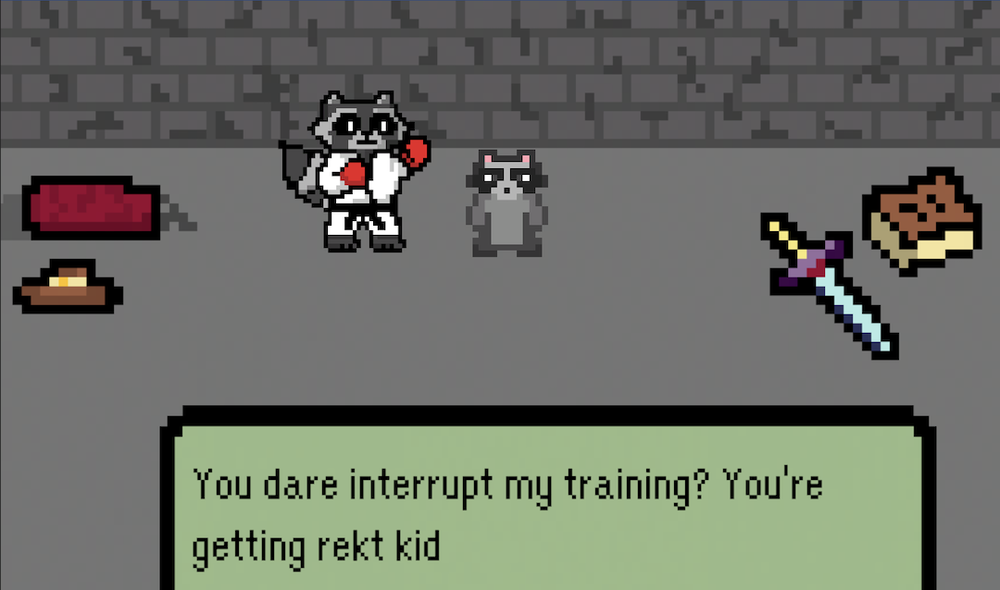

Instructions
Welcome to the enchanting world of Raccoon Runecasters! This is a strategic card game where you, the player, will face off against the cunning and evil raccoons. Here's how to navigate through this magical journey:
- Starting the Game: The game begins with you signing into your account. Make sure to remember your username and password for future battles!
- Choosing Your Destiny: Once you're logged in, click on the 'Play' button to start your adventure. You will then be presented with three options for your destiny: the Fighter, the Cowboy, or the Wizard Raccoon. Each choice comes with its unique abilities and strategies, so choose wisely!
- Entering the Realm: After choosing your destiny, you will be transported to a mystical chamber. This is the gateway to the new realm where the game takes place. Use your keys to move around and go through the portal, that'll take you to another reality.
- Facing the Enemy: Navigate through the chamber to find the Fighter Raccoon. This is your first opponent. Approach with caution and prepare for battle!
- Playing Your Cards: Each player starts with 3 cards in their hand. These cards represent your actions and abilities in the game. Use them strategically to outwit your opponent. If you're unsure about your strategy, take a look at the Raccoon Runester cards.
- The Battle: The game is all about strategy. Use your cards wisely to defeat the evil raccoon. Remember, each card has its unique power and effect on the game. After defeating the Fighter Raccoon, it's not over! You're going to face the next Raccoons so make sure you approach them like you did with the Fighter!
- End of the Game: The game continues until only one raccoon survives - either you, the mighty raccoon, or the evil raccoon. If you survive, you win the game and move on to the next level. If the evil raccoon survives, don't worry! You can always try again and refine your strategy. No more spoilers, see for yourself!

Remember, Raccoon Runecasters is not just about winning or losing. It's about strategy, decision-making, and having fun. So, get ready to cast some runes and may the best raccoon win!